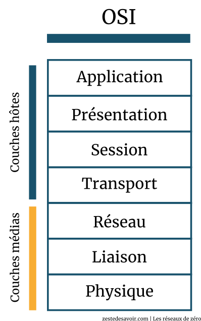

Le modèle OSI :Le modèle OSI se présente avec 7 segments :
|
 |
Définition des couches du modèle OSI
|
Comment fonctionne le modèle OSI :Le model OSI est un système d'encapsulation et de désancapsulation pour faire transiter des données.Une information pour aller d'un endroit A à B passe de la couche Application à Physique (c'est ce qu'on appelle l'encapsulation) Avant de passer dans le résaux pour aller a sa destination, A sa destination elle passe de la couche Physique à Application (c'est ce qu'on appelle la désancapsulation) |
|